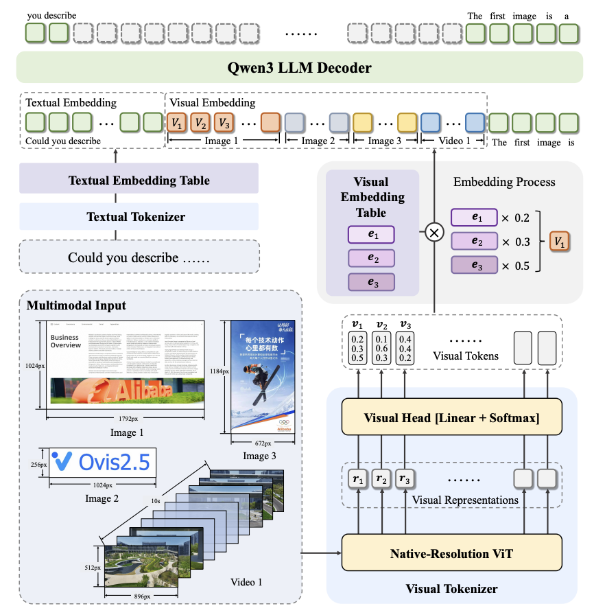

👀 About Me
I am currently with the Ant Ling Team at Ant Group.
Prior to joining Ant Group, I received my M.Sc. degree from the School of Artificial
Intelligence, Nanjing University, in 2026,
under the supervision of Prof. Han-Jia Ye.
During my graduate studies, I was a member of the
LAMDA Group, led by Prof.
Zhi-Hua Zhou.
Before that, I received my B.Sc. degree from the College of Computer
Science & Technology, Nanjing University of Aeronautics and
Astronautics, in June 2023 (GPA ranked 1 / 120). In the same year, I was admitted to
the M.Sc. program at Nanjing University without entrance examination.
Beyond research, I am a National Level-II Tennis Athlete and former captain of both NUAA and NJU Tennis Teams.
Internship Opportunities
I am seeking highly self-motivated students for internships in multimodal foundation models.
If interested, please email your resume and transcript to
yimo.shl@antgroup.com.
📣 News
🌟 Research Interests
My research focuses on building capable and reliable learning systems, with an emphasis on multimodal foundation models and continual learning.
Multimodal Foundation Models
Multimodal Agent and Coding
Continual Learning
🚀 Selected Publications


Representative work in multimodal reasoning, multilingual MLLMs, and continual learning. My name is highlighted in bold.
Full publication list
-
 ACL
ACL
Mitigating Visual Forgetting via Take-along Visual Conditioning for Multi-modal Long CoT Reasoning
Hai-Long Sun, Zhun Sun, Houwen Peng, Han-Jia Ye.
First Author
Paper
Project Page
Huggingface
-
 ICML
ICML
Parrot: Multilingual Visual Instruction Tuning
Hai-Long Sun, Da-Wei Zhou, Yang Li, Shiyin Lu, Chao Yi, Qing-Guo Chen, Zhao Xu, Weihua Luo, Kaifu Zhang, De-Chuan Zhan, Han-Jia Ye.
First Author
Paper
Code
Project Page
Huggingface
-
 SCIS
SCIS
PILOT: A Pre-Trained Model-Based Continual Learning Toolbox
Hai-Long Sun, Da-Wei Zhou, De-Chuan Zhan, Han-Jia Ye.
First Author
Paper
Code
中文解读
-
 AAAI
AAAI
MOS: Model Surgery for Pre-Trained Model-Based Class-Incremental Learning
Hai-Long Sun, Da-Wei Zhou, Hanbin Zhao, Le Gan, De-Chuan Zhan, Han-Jia Ye.
First Author
Paper
Code
-
 CVPR
CVPR
Expandable Subspace Ensemble for Pre-Trained Model-Based Class-Incremental Learning
Da-Wei Zhou, Hai-Long Sun, Han-Jia Ye, De-Chuan Zhan.
Student First Author
Paper
Code
-
 IJCAI
IJCAI
-
Length-Adaptive Caption Generation with LLMs
Hai-Long Sun, Qing-Guo Chen, Da-Wei Zhou, De-Chuan Zhan, Han-Jia Ye.
First Author
IJCAI'24 Workshop · SCICAP Challenge 2024
Paper
Challenge Page
View additional publications
-

Technical Report
Ovis2.5 Technical Report
Ovis Contributors
Paper
Code
-
 Technical Report
Technical Report
VLMEvalKit: A Toolkit for Evaluating Large Vision-Language Models
VLMEvalKit Contributors
Paper
Code
-
 CVPR
CVPR
Insight-V: Exploring Long-Chain Visual Reasoning with Multimodal Large Language Models
Yuhao Dong, Zuyan Liu, Hai-Long Sun, Jingkang Yang, Winston Hu, Yongming Rao, Ziwei Liu.
Paper
Code
-
 NeurIPS
NeurIPS
Triplets Better Than Pairs: Towards Stable and Effective Self-Play Fine-Tuning for LLMs
Yibo Wang, Hai-Long Sun, Guangda Huzhang, Qing-Guo Chen, Zhao Xu, Weihua Luo, Kaifu Zhang, Lijun Zhang
NeurIPS'25. CCF-A
Paper
-
 NeurIPS
NeurIPS
Multimodal Tabular Reasoning with Privileged Structured Information
Jun-Peng Jiang, Yu Xia, Hai-Long Sun, Shiyin Lu, Qing-Guo Chen, Weihua Luo, Kaifu Zhang, De-Chuan Zhan, Han-Jia Ye
NeurIPS'25. CCF-A
Paper
🏆 Awards & Honors
- 2025, National Scholarship for Graduate Students
- 2022, CCF Elite Collegiate Student Award (only 102 recipients nationwide)
- 2020/2022, National Scholarship for Undergraduates
- 2022, Grand Prize(全国唯一特等奖), China Collegiate Computing Contest - Network Technology Challenge in Track A
- 2022, Bronze Medal, ACM-ICPC Asia East Continent Final Contest
- 2020, Second Prize, The First China AI Guandan Algorithm Competition
- 2022, Gold Medal, Jiangsu Collegiate Programming Contest
- 2022, Meritorious Winner in MCM/ICM
- 2023, Outstanding Graduate of Nanjing University of Aeronautics and Astronautics
- 2023, 全国单打亚军、团体季军, 第26届全国大学生网球锦标赛总决赛
- 2024, 江苏省单打冠军、团体冠军, 2024年江苏省大学生网球锦标赛
- 2024, Champion, The Second Scientific Figure Captioning Challenge @IJCAI'24
- 2024, 特等奖, 挑战杯“揭榜挂帅”专项赛-中国电信赛道
👨💻 Experience
2026.03 — Present


Ant Group
Ant Ling Team
2025.04 — 2026.02

Alibaba Token Hub · MaaS Team
Multimodal Research Intern
2024.10 — 2025.04


Tencent · TEG
Hunyuan Research Intern
2024.03 — 2024.10
Alibaba · AIDC-AI Business
MLLM Research Intern
2022.08 — 2023.03

ByteDance · Data
Algorithm Intern
🎯 Service
- Conference Reviewer: CVPR'24, NeurIPS'24, ICLR'25🏆, CVPR'25, ICML'25, ICCV'25, NeurIPS'25, ICLR'26, CVPR'26
- Teaching Assistant: Introduction to Machine Learning. (For undergraduate students; Autumn, 2023)